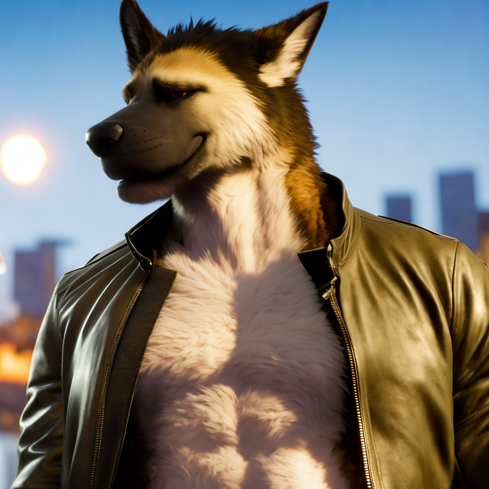

Please see this video.
I want to show the furry community what can be accomplished with AI and how it can help bring anthro characters to life in new ways.
I use Stable Diffusion using Automatic1111 running on my desktop machine.
I've seen people run Stable Diffusion with Automatic1111 on a GTX 970 and GTX 1060.
I don't rely on a single prompt or prompt engineering. Most of the images I create rely heavily on compositing and overpainting in Photoshop and inpainting in Automatic1111.
I'm currently using a mix between YiffAI, Nitro Diffusion, Dreamlike Diffusion, and Stable Diffusion 2.1.
You can find a list here.
I simply don't enjoy working on NSFW images.
There's the' Furry Diffusion Discord (unrelated to myself).
The third pillar of fair use, substantiality, is a key factor in determining whether a work is fair use, or in other words, whether permission from the copyright holder is required. The substantiality of AI art is effectively zero since all output is in some way influenced by each and every image in the training data.